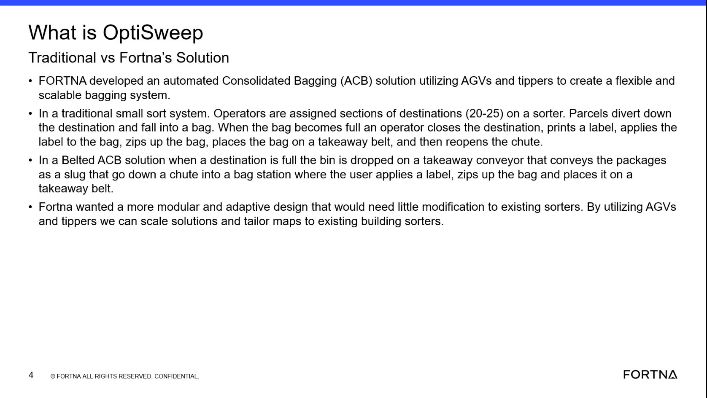

| Procedure ID | proc_interpret_optisweep_differs_from_traditional_and_belted_bagging_models_v1 |
|---|---|
| Title | Interpret How OptiSweep Differs From Traditional and Belted Bagging Models |
| Procedure Type | reference |
| Primary Role | L1_support |
| Support Safe | Yes |
| Validation Status | needs_sme_review |
| Merge Status | source_finalized |
Use the source comparison to identify the documented operating characteristics that distinguish OptiSweep from traditional small sort and belted ACB bagging approaches.
Use when reviewing a system description, training discussion, or observed process and you need to classify it against the source-described models: traditional small sort bagging, belted ACB, or FORTNA's OptiSweep solution.
Responsible role: L1_support
Instruction:
Review the source comparison between the traditional system, the belted ACB solution, and FORTNA's solution.
Expected result:
The comparison categories and their distinguishing characteristics are visible and available for reference.
Screens / Images:

Stop or Escalate If:
Responsible role: L1_support
Instruction:
Identify whether the described flow depends on operators manually closing destinations, printing and applying labels, zipping bags, and placing bags on a takeaway belt for 20-25 destinations.
Expected result:
You can determine whether the described process matches the traditional small sort bagging model.
Screens / Images:
Stop or Escalate If:
Responsible role: L1_support
Instruction:
Identify whether the described flow uses a full destination bin dropped onto a takeaway conveyor and conveyed as a slug down a chute into a bag station.
Expected result:
You can determine whether the described process matches the belted ACB model.
Screens / Images:
Stop or Escalate If:
Responsible role: L1_support
Instruction:
Identify whether the described solution is characterized as using AGVs and tippers for a flexible, scalable, modular, and adaptive bagging system.
Expected result:
You can determine whether the described process matches the source-defined OptiSweep approach.
Screens / Images:
Stop or Escalate If:
Responsible role: L1_support
Instruction:
Record which model matches the observed or discussed system description using only the source-provided characteristics.
Expected result:
A source-grounded classification is recorded as traditional small sort bagging, belted ACB, or OptiSweep.
Screens / Images:
Stop or Escalate If: